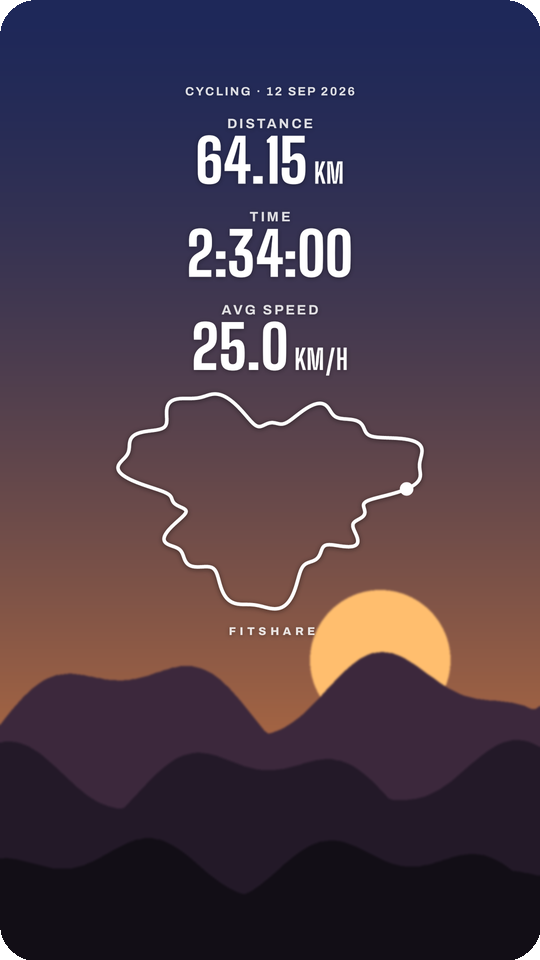
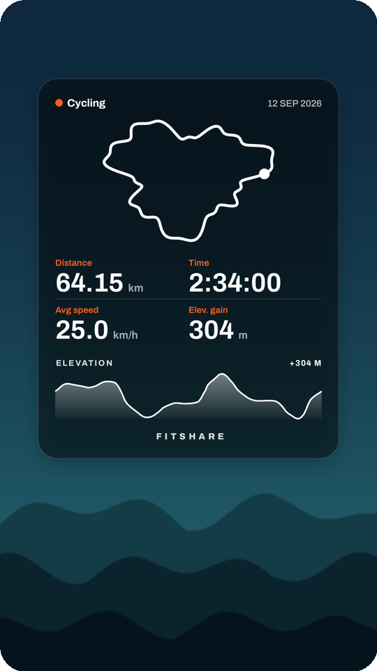

ALTERNATIVE
A Strava-style stats sticker, without Strava
Strava's stats sticker puts your distance, time and route on an Instagram story. It needs a Strava account and your workout on Strava's servers. FitShare draws the same kind of sticker on your phone from a FIT, GPX or KMZ file.



What you get
- A transparent PNG, cropped to its content, so Instagram treats it as a movable photo sticker.
- Distance, time, speed or pace, elevation gain, heart rate, calories, steps, laps: pick up to four.
- Route, elevation profile, heart rate graph and km splits as extras.
- No account and no upload. The app has no internet permission.
Where the data comes from
From the share picture of Strava, Garmin Connect or Mi Fitness, from Gadgetbridge (FIT or JSON), from OpenTracks (KMZ or GPX), or from any GPX file, including one exported from Strava or Komoot. On an iPhone, use the web app.
Download the APKOpen in the browser
The APK needs Android 8.0 or newer, no account, no internet permission. The web app runs on iPhone, Android and desktop with nothing to install; pictures and files never leave the device.
Questions
Does FitShare look exactly like Strava's sticker?
No, it has its own designs. The idea is the same: stats and route on a transparent background you place on top of your photo.
Can I import a Strava activity?
Yes. Tap Share on the activity in the Strava app and pick FitShare; it reads the numbers off the picture. For the route, export the GPX on strava.com and share that too.
Why not just use Strava?
Some people don't want their workouts on a server. FitShare works fully offline with files you already have.
Strava is a trademark of Strava, Inc. FitShare is an independent project.